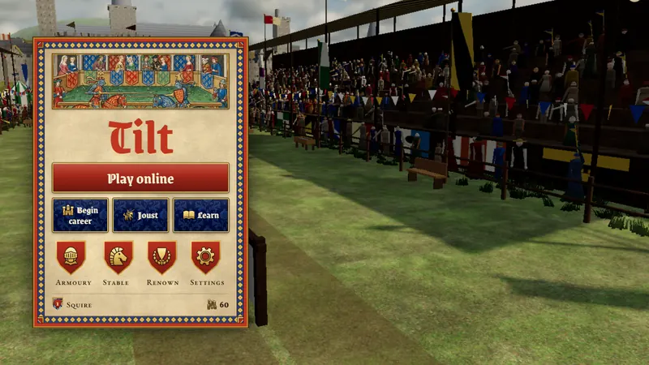

Roadmap
From the browser to the full PC game
Joust Revival is a free browser game today. The goal is a full PC game in Unreal Engine: the most realistic jousting ever made. This page says plainly what is done, what is being built, and what is still a plan. Last updated 26 November 2026.
Now
Live · free in your browser- The joustOver the tilt or in the open field. Couch your lance late, aim for the shield or the helm, brace, thrust, and keep your seat.
- HistoryFive real venues (Smithfield 1390, Saint-Inglevert 1390, the Passo Honroso 1434, the Golden Tree 1468, the Gesellenstechen 1501), eight rule sets including Tiptoft's Ordinances, the Statutes of the Band, the Gestech and the Scharfrennen, and nine real opponents.
- KitFour harnesses (c. 1250 to c. 1500), four helms, three lances at their true length, four horse breeds at real size, caparisons in your colours, your own coat of arms.
- The horseShaped from photographs of real horses; the gallop matched to Muybridge's 1878 photographs.
- ImpactsSplintering lance breaks, hit reactions by where the point lands, falls, hit-stop. The whole lance shaft is solid.
- PresentationMatch intro, herald, judges, a crowd with two favours (the commons and the gallery), automatic replays, five angles, visor views, free camera, slow motion.
- CareerKnockout tournaments as a season, honours, victory lap, renown and skills, feats, a retinue of five, injuries, yielding and the surgeon.
- OnlineJoust a friend, public rooms, Quick match, Find match by rating, Ranked with Glicko-2 and six divisions, a leaderboard, accounts with cloud saves.
- Phone and desktopTouch controls on phones and tablets, automatic graphics settings per device.
Next
In development now- Physics overhaulLance bend and break timing, the rider's snap-back and the path of a fall, tuned to what we measured in 20 real jousting videos.
- PeopleRebuilt bodies with body types and faces for knights, squires and the crowd.
- The crowdSpectators that move like real ones, from the same footage study: cheers, waves, flag-wavers, marshals running to a fallen man.
- Horse hair and coatA real mane and tail, coat detail per breed.
- New interfaceIlluminated-manuscript menus after the Codex Manesse: fewer screens, bigger choices.
- Tournament eventsEvents shaped like real 15th-century ones: challenge days of a pas d'armes, the herald's score roll, the prize joust, Best Lance and the Ladies' Prize.
Later
Planned, not started- A story careerOne knight's life on the circuit, written and voiced as a story.
- More real joustersAnthony Woodville, Antoine the Grand Bastard of Burgundy, Adolf of Cleves, John Holland and others.
- The roadYour retinue's cart travelling between tournaments.
- Online seasonsTen-match seasons with promotion and relegation; friends and messages.
- Big momentsA helm knocked clean off (very rare), a horse that rears on command, watching the other knights' bouts.
- Water joustingTwo boats, a jouster on each stern: a mini-game.
The PC version
Unreal Engine · Steam- Why UnrealThe browser game is the proving ground. All the tuning lives in plain data tables so it carries over.
- ArmourModular harness on one skeleton, modelled from museum pieces in open-access collections.
- PeopleReal faces, full-body motion, a crowd with thousands of people.
- SteamA Steam page once there is a working Unreal build; then wishlists, a demo, and Early Access.
- KickstarterNot now. Only once there is a playable slice and an audience to show it to.
On the workbench
Work in progress from the development branches. Not in the live game yet.


What we will not promise
No release dates for the PC version yet. A date we cannot keep is worth less than no date. When there is a playable Unreal build, there will be a Steam page and a date to aim for, and you will hear it first in the newsletter.
The free browser game is not going away. It is where the joust is tuned, and it will stay free to play.